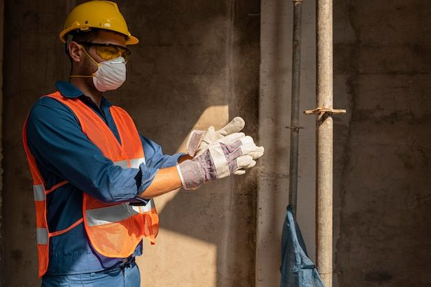
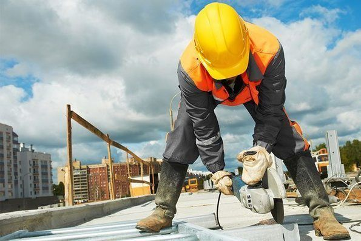

Nuestros Servicios
En Cooperativa Progreso, nos especializamos en una amplia gama de servicios diseñados para hacer tu vida más fácil y cómoda. Desde pequeñas mejoras hasta proyectos de construcción a gran escala, estamos aquí para ayudarte en todas tus necesidades.
Nuestros servicios incluyen:
Señalamiento vial realizando las siguientes tareas:
Señalizar las vías públicas con marcas, carteles, dispositivos y elementos que indiquen a los conductores y peatones las normas, advertencias, restricciones e información sobre el tránsito y el estado de la ruta.
Planificar, diseñar, instalar y mantener el sistema de señalamiento vial uniforme, de acuerdo a las normas técnicas y legales vigentes.
Realizar trabajos de señalamiento transitorio en obras de construcción o conservación vial, para garantizar la seguridad de los trabajadores, los usuarios y el medio ambiente.
Certificar la calidad y el funcionamiento de los sistemas de contención lateral, como barreras, defensas y guardarrails.
Controlar y evaluar el estado de los pavimentos, las mezclas asfálticas y las aplicaciones bituminosas.
Coordinar y supervisar el trabajo del personal técnico y operativo encargado de la ejecución de los proyectos de iluminación vial.
Refacción y Construcción:
Ampliaciones y Reformas
Construcción de Viviendas, Comercios y Escuelas
Restauración de Edificios Antiguos